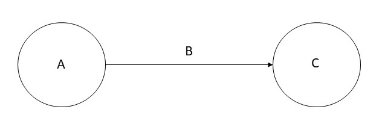
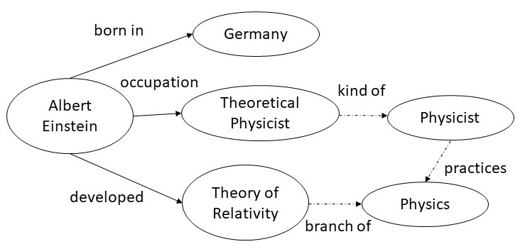

1. Introduction
Knowledge graphs have emerged as a compelling abstraction for
organizing world's structured knowledge over the internet, and a way
to integrate information extracted from multiple data
sources. Knowledge graphs have also started to play a central role in
machine learning as a method to incorporate world knowledge, as a
target knowledge representation for extracted knowledge, and for
explaining what is learned.
Our goal here is to explain the basic terminology, concepts and
usage of knowledge graphs in a simple to understand manner. We do not
intend to give here an exhaustive survey of the past and current work
on the topic of knowledge graphs.
We will begin by defining knowledge graphs, some applications that
have contributed to the recent surge in the popularity of knowledge
graphs, and then use of knowledge graphs in machine learning. We
will conclude this note by summarizing what is new and different
about the recent use of knowledge graphs.
2. Knowledge Graph Definition
A knowledge graph is a directed labeled graph in which the labels
have well-defined meanings. A directed labeled graph consists of
nodes, edges, and labels. Anything can act as a node, for example,
people, company, computer, etc. An edge connects a pair of nodes and
captures the relationship of interest between them, for example,
friendship relationship between two people, customer relationship
between a company and person, or a network connection between two
computers. The labels capture the meaning of the relationship, for
example, the friendship relationship between two people.
More formally, given a set of nodes N, and a set of
labels L, a knowledge graph is a subset of the cross
product N × L × N. Each member of this set is
referred to as a triple, and can be visualized as shown below.

The directed graph representation is used in a variety of ways
depending on the needs of an application. A directed graphs such as
the one in which the nodes are people, and the edges capture
friendship relationship is also known as a data graph. A directed
graph in which the nodes are classes of objects (e.g., Book,
Textbook, etc.), and the edges capture the subclass
relationship, is also known as a taxonomy. In some data
models, A is referred to as subject, B is
referred to as predicate, and C is referred to as
object.
Many interesting computations over graphs can be reduced to
navigating the graph. For example, in a friendship knowledge graph,
to calculate the friends of a friends of a person A, we can
navigate the knowledge graph from A to all nodes B
connected to it by a relation labeled as friend, and then
recursively to all nodes C connected by the friend relation to
each B.
A path in a graph G is a series of nodes
(v1, v2,..., vn) where for any i
∈ N with 1 ≤ i < n, there is an edge from vi to
vi+1. A simple path is a path with no
repeated nodes. A cycle is a path in which the first
and the last nodes are the same. Usually, we are interested in only
those paths in which the edge label is the same for every pair of
nodes. It is possible to define numerous additional properties over
the graphs (e.g., connected components, strongly connected
components), and provide different ways to traverse the graphs (e.g.,
shortest path, Hamiltonian path, etc.).
3. Recent Applications of Graphs
There are numerous applications of knowledge graphs both in research
and industry. Within computer science, there are many uses of a
directed graph representation, for example, data flow graphs, binary
decision diagrams, state charts, etc. For our discussion here, we
have chosen to focus on two concrete applications that have led to
recent surge in popularity of knowledge graphs: organizing information
over internet and data integration.
3.1 Graphs for organizing Knowledge over the Internet
We will explain the use of a knowledge graph over the web by taking
the concrete example of Wikidata. Wikidata acts as the central storage
for the structured data for Wikipedia. To show the interplay between
the two, and to motivate the use of Wikidata knowledge graph, consider
the city of Winterthur in Switzerland which has a page in
Wikipedia. The Wikipedia page for Winterthur lists its twin towns: two
are in Switerzland, one in Czech Republic, and one in
Austria. The city of Ontario in California that has a Wikipedia page
titled Ontario, California, lists Winterthur as its sister
city. The sister city and twin city relationships are identical as
well as reciprocal. Thus, if a city A is a sister city of another city
B, then B must be a sister city of A. This inference should be
automatic, but because this information is stated in English in
Wikipedia, it is not easy to detect this discrepancy. In contrast, in
the Wikidata representation of Winterthur, there is a relationship
called twinned administrative body that lists the city of
Ontario. As this relationship is symmetric, the Wikidata page for the
city of Ontario automatically includes Winterthur. Thus, when Wikidata
knowledge graph will be fully integrated into Wikipedia, such
discrepancies will naturally disappear.
Wikidata includes data from several independent providers, for
example, the Library of Congress that publishes data containing
information about Winterthur. By using the Wikidata identifier for
Winterthur, the information released by Library of Congress can be
easily linked with information available from other sources.
Wikidata makes it easy to establish such links by publishing the
definitions of relationships used in it in Schema.Org.
The vocabulary of relations in Schema.Org gives us, at
least, three advantages. First, it is possible to write queries that
span across multiple datasets that would not have been possible
otherwise. One example of such a query is: Display on a map the
birth cities of people who died in Winterthour? Second, with such a
query capability, it is possible to easily generate structured
information boxes within Wikipedia. Third, structured information
returned by queries also can appear in the search results which is
now a standard feature for the leading search engines.
A recent version of Wikidata had over 80 million objects, with over
one billion relationships among those objects. Wikidata makes
connections across over 4872 different catalogs in 414 different
languages published by independent data providers. As per the recent
estimate, 31% of the websites, and over 12 million data providers
publish Schema.Org annotations are currently using the vocabulary of
Schema.Org.
Let us observe several key features of the Wikidata knowledge
graph. First, it is a graph of unprecedented scale, and is the
largest knowledge graph available today. Second, it is being jointly
created by a community of contributors. Third, some of the data in
Wikidata may come from automatically extracted information, but it
must be easily understood and verified as per the Wikidata
editorial policies. Fourth, there is an explicit effort to provide
semantic definitions of different relation names through the
vocabulary in Schema.Org. Finally, the primary driving use
case for Wikidata is to improve the web search. Even though Wikidata
has several applications using it for analytical and visualization
tasks, but its use over the web continues to be the most compelling
and easily understood application.
3.2 Graphs for Data Integration in Enterprises
Data integration is the process of combining data from different
sources, and providing the user with a unified view of data. A large
fraction of data in the enterprises resides in the relational
databases. One approach to data integration relies on a global schema
that captures the interrelationships between the data items
represented across these databases. Creating a global schema is an
extremely difficult process because there are many tables
and attributes; the experts who created these databases are usually
not available; and because of lack of documentation, it is difficult
to understand the meaning of the data. Because of the challenges in
creating a global schema, it is convenient to sidestep this issue, and
convert the relational data into a database with the generic schema of
triples, ie, a knowledge graph. The mappings between the attributes
are created on as needed basis, for example, in response to addressing
specific business questions, and can themselves be represented within
a knowledge graph. We illustrate this process using a concrete
example.
Many financial institutions are interested in creating a company
knowledge graph that combines the internal customer data with the
data licensed from third parties. Some examples of such third party
datasets include Dunn & Bradstreet, S&P 500, etc. An example usage
of a company graph is to assess the risk while making loan
decisions. The external data contain information such as the
suppliers of a company. If a company is going through financial
difficulty, it increases the risk of awarding loan to the suppliers
of that company. To combine this external data with the internal
data, one has to relate the external schemas with the internal
company schema. Furthermore, the company names used in the external
sources have to be related to the corresponding customer identifiers
used by the financial institutions. While using a knowledge graph
approach to data integration, determining such relationships can be
delayed until they are actually required.
4. Graphs in Artificial Intelligence
Knowledge graphs, known as semantic networks, have been used as a
representation for Artificial Intelligence since the early days of
the field. Over the years, semantic networks were evolved into
different representations such as conceptual graphs and description
logics. To capture uncertain knowledge, probabilistic graphical
models were invented.
Orthogonal to the representation of knowledge, a central challenge
in AI is knowledge acquisition bottleneck, ie, how to capture
knowledge into the chosen representation in an economically scalable
manner. Early approaches relied on knowledge engineering. Efforts
to automate portions of knowledge engineering led to techniques such
as inductive learning, and the current generation of machine
learning.
Therefore, it is natural that the knowledge graphs are being used
as a representation of choice for storing the knowledge automatically
learned. There is also an increasing interest to leverage domain
knowledge that is expressed in knowledge graphs to improve machine
learning.
4.1 Graphs as the output of Machine Learning
We will consider how graphs are being used as a target output representation for
natural language processing and computer vision algorithms.
Entity extraction and relation extraction from text are two
fundamental tasks in natural language processing. The extracted
information from multiple portions of the text needs be correlated,
and graphs provide a natural medium to accomplish such a goal. For
example, from the sentence shown on the left, we can extract the
entities Albert Einstein, Germany, Theoretical Physicist, and
Theory of Relativity; and the relations born in, occupation and
developed. Once this snippet of the graph is incorporated
into a larger graph, we get additional links (shown by dotted edges)
such as a Theoretical Physicist is a kind of Physicist
who practices Physics, and that Theory of Relativity is
a branch of Physics.
| Albert Einstein was a German-born theoretical
physicist who developed the theory of relativity.
|  |
|
|
A holy grail of computer vision is the complete understanding of an
image, that is, creating a model that can name and detect
objects, describe their attributes, and recognize their
relationships. Understanding scenes would enable important
applications such as image search, question answering, and robotic
interactions. Much progress has been made in recent years towards this
goal, including image classification and object detection.
For example, from the image shown above, an image understanding
system should produce a graph shown to the right. The nodes in the
graph are the outputs of an object detector. Current research in
computer vision focuses on developing techniques that can correctly
infer the relationships between the objects, such as,
man holding a bucket, and horse feeding from the bucket,
etc. The graph shown to the right is an example of a knowledge graph,
and conceptually, it like the data graphs that we introduced
earlier.
4.2 Graphs as input to Machine Learning
Popular deep machine learning models rely on a numerical input
which requires that any symbolic or discrete structures should first
be converted into a numerical representation. Embeddings that
transform a symbolic input into a vector of numbers have emerged as a
representation of choice for input to machine learning models. We
will explain this concept and its relationship to knowledge graphs
by taking the example of word embeddings and
graph embeddings.
Word embeddings were developed for calculating similarity
between words. To understand the word embeddings, we consider the
following set of sentences.
| I like knowledge graphs. | |
| I like databases. | |
| I enjoy running. | |
In the above set of sentences, we will count how often a word appears
next to another word, and record the counts in a matrix shown
below. For example, the word I appears next to the
word like twice, and next to word enjoy once, and
therefore, its counts for these two words are 2 and 1 respectively,
and 0 for every other word. We can calculate the counts for other
words in a similar manner to fill out the table.
| counts | I | like | enjoy | knowledge | graphs | databases | running | . |
| I | 0 | 2 | 1 | 0 | 0 | 0 | 0 | 0 |
| like | 2 | 0 | 0 | 1 | 0 | 1 | 0 | 0 |
| enjoy | 1 | 0 | 0 | 0 | 0 | 0 | 1 | 0 |
| knowledge | 0 | 1 | 0 | 0 | 1 | 0 | 0 | 0 |
| graphs | 0 | 0 | 0 | 1 | 0 | 0 | 0 | 1 |
| databases | 0 | 1 | 0 | 0 | 0 | 0 | 0 | 1 |
| running | 0 | 0 | 1 | 0 | 0 | 0 | 0 | 1 |
| . | 0 | 0 | 0 | 0 | 1 | 1 | 1 | 0 |
Above table constitutes a matrix which is often referred to
as word cooccurrence counts. We say that the meaning of each
word is captured by the vector in the row corresponding to that
word. To calculate similarity between words, we can simply calculate
the similarity between the vectors corresponding to them. In practice,
we are interested in text that may contain millions of words, and a
more compact representation is desired. As the above matrix is sparse,
we can use techniques from Linear Algebra (e.g., singular value
decomposition) to reduce its dimensions. The resulting vector
corresponding to a word is known as word embedding. Typical
word embeddings in use today rely on vectors of length 200. There are
numerous variations and extensions of the basic idea presented
here. Techniques exist for automatically learning word embeddings for
any given text.
Use of word embeddings has been found to improve the performance of
many natural language processing tasks including entity extraction,
relation extraction, parsing, passage retrieval, etc. One of the most
common applications of word embeddings is in auto completion of search
queries. Word embeddings give us a straightforward way to predict
the words that are likely to follow the partial query that a user has
already typed.
As a text is a sequence of words, and word embeddings calculate
co-occurrences of words in it, we can view the text as a graph in
which every word is a node, and there is a directed edge between
each word and another word that immediately follows it. Graph
embeddings generalize this notion for general network structure. The
goal and approach, however, remains the same: represent each node in
a graph by a vector, so that the similarity between the nodes can be
calculated as a difference between their corresponding vectors. The
vectors for each node are also referred to as graph embeddings.
To calculate graph embeddings, we define a method for encoding each
node in the graph into a vector, a function to calculate similarity
between the nodes, and then optimize the encoding function. One
possible encoding function is to use a random walk of the
graph and calculate co-occurrence counts of nodes on the graph
yielding a matrix similar to co-occurrence counts of words in
text. There are numerous variations of this basic method to
calculate graph embeddings.
We have chosen to explain graph embeddings by first explaining word
embeddings because as it is easy to understand them, and their use is
common place. Graph embeddings are a generalization of the word
embeddings. They are a way to input domain knowledge expressed in a
knowledge graph into a machine learning algorithm. Graph embeddings
do not induce a knowledge representation, but are a way to turn
symbolic representation into a numeric representation for consumption
by a machine learning algorithm.
Once we have calculated graph embeddings, they can be used for a
variety of applications. One obvious use for the graph embeddings
calculated from a friendship graph is to recommend new friends. A more
advanced tasks involve link prediction (ie, the likelihood of a link
between two nodes), etc. Link prediction in a company graph could be
used to identify potential new customers.
5. Summary
Graphs are a fundamental construct in discrete mathematics, and
have applications in all areas of computer science. Most notable uses
of graphs in knowledge representation and databases have taken the
form of data graphs, taxonomies and ontologies. Traditionally, such
applications have been driven by a top down design. As a knowledge
graph is a directed labeled graphs, we are able to leverage theory,
algorithms and implementations from more general graph-based systems
in computer science.
Recent surge in the use of knowledge graphs for organizing
information on the internet, data integration, and as an output target
for machine learning, is primarily driven in a bottom up manner. For
organizing information on the web, and in many data integration
applications, it is extremely difficult to come up with a top down
design of a schema. The machine learning applications are driven by
the availability of the data, and what can be usefully inferred from
it. Bottom up uses of knowledge graphs do not diminish the value of a
top down design of the schema or an ontology. Indeed, the Wikidata
project leverages ontologies for ensuring data quality, and most
enterprise data integration projects advocate defining the schema on
as needed basis. Machine learning applications also benefit
significantly with the use of rich ontology for making inferences from
the information that is learned even though a global ontology or a
schema is not required at the outset.
Word-embeddings and graph-embeddings both leverage a graph
structure in the input data, but they are necessarily more general
than knowledge graphs in that there is no implicit or
explicit need for a schema or an ontology. For example, graph
embeddings can be used over the network defined by exchange of
messages between nodes on the internet, and then used in machine
learning algorithms to predict rogue nodes. In contrast, for
the Wikidata graph, knowledge graphs in the enterprises, and
in the output representation of machine learning algorithms, a schema or ontology can play
a central role.
We conclude by observing that the recent surge in interest in
knowledge graphs is primarily driven by the bottom up requirements
of several compelling business applications. Knowledge graphs in
these applications can certainly benefit from the classical work on
the top down representation design techniques, and in fact, we
envision that eventually the two will converge.
|
 CS520
CS520